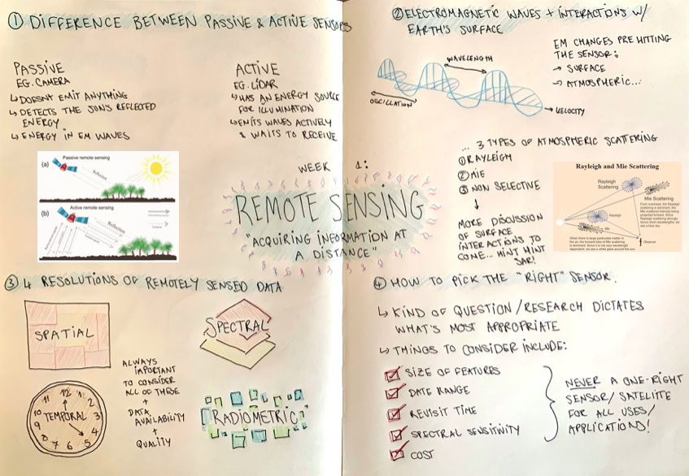

1 Introduction to remote sensing
1.1 Summary
This lecture felt like it very much served as a ‘Remote sensing 101’; we looked at what remote sensing actually is, the two different kinds of sensors (passive versus active), the ways in which data collected by sensors interact with both the earth and the atmosphere and finally the 4 resolutions of remotely sensed data. All of this was used to demonstrate that there is no one sensor for all applications - the kind of research you’re undertaking will dictate which sensor and what kind of data is appropriate. To consolidate what we learnt in class, I produced a summary sheet of the taught content, displayed below.

1.2 Applications
Coming from a background in remote sensing for environmental monitoring that has seen me use SNAP & R quite extensively, I decided it best to dedicate my study time in week 1 to consider applications of remote sensing data that I was unfamiliar with. Quite often during my undergraduate degree I found myself falling into a trap of believing that anything that lay beyond the confines of strictly quantitative and highly scientific research was a waste of time and not worth paying attention to. Only now that I’ve graduated am I realising how narrow-minded and naive this perspective is; it really came to mind when during the lecture we were reminded that given the plethora of potential applications of remotely sensed data, there is no singular best sensor or optimum spatial/spectral/temporal resolution.
So, in an attempt to fix my old way of thinking, I am starting off CASA0023 and this learning diary by researching applications of remote sensing that sit beyond the confines of physical geography. To have some fun with it, I decided to try and find an example of a time remotely sensed data was used to address an unusual topic for every letter of the alphabet. I used a random word generator (https://randomwordgenerator.com/) to offer me a word which served as the starting point of my research. Below I have provided a brief description of articles that I came across during my research, many of which prompted me to fall down a rabbit hole of literature that I’d never come across before.
Adolescent vulnerability in Indonesia: Toharudin et al., 2017
Toharudin et al., 2017 examined mental health issues in adolescents in Indonesia by combining a variety of variables including mobile phone usage, emotional disorder classifications, travel experiences as well as night light remote sensing data to see how behavioural disorders varied between young people in urban versus rural areas.
Classifying punches in Olympic boxing using static RGB cameras: Stefański et al., 2023
Stefański et al., 2023 sought to propose a solution to address current issues regarding the classification of punches in Olympic boxing by using static RGB cameras opposite the ring to track and then classify athlete moves. This challenged conventional approaches to track athletes in combat sports that see athletes require wearable sensors.
On-site cocaine detection with an integrated near-infrared spectral sensor: Kranenburg et al., 2022
In response to the all-time high of illegal drug production/trafficking/seizures/usage, Kranenburg et al., 2022 explore the concept of an on-site drug detection device that uses a NIR spectral sensor that can be integrated into a smart phone. Their testing found the sensor to successfully exploit an array of resonant-cavity enhanced photodetectors to correctly classify 11 common illicit drugs 100% of the time. This is achieved by chemometric modelling of the response of 15 wavelength-specific pixels (chemometric is just a fancy word for mathematical methods that analyse chemical data).
Dinosaur fossils discovered using remotely piloted aircraft systems: Herridge-Berry et al., 2021
Digging for dinosaur remains is limited by the typically inaccessible terrain surrounding potential archeological sites. Herridge-Berry et al., 2021 however offer a proof-of-concept test for the remote sensing of fossils (specifically ‘vertebrate boneheads’) in Dinosaur Provincial Park, Alberta as the case study. Due to the small size of most fossils, they suggest using Spectral Mixture Analysis after collecting data obtained by deploying a RGB camera onto a plane flying over a study site.
Advancing the egg industry using non-destructive optical sensing technologies: Ahmed et al. 2023
In acknowledgement of eggs being one of the best sources of protein and one of the most popular foods worldwide, Ahmed et al. 2023 wrote a review of ways in which technologies including satellites in space and remote sensors are currently used (and can in future be used) to turn the current egg industry into ‘Industry 4.0’.
Predicting the distribution potential of an invasive frog in Hawaii using remotely sensed data: Bisrat et al., 2011
Bisrat et al., 2011 used 5 biophysical variables derived from MODIS as predictors for the potential distribution of Eleutherodactylus coqui (commonly known as the coqui frog), a species native to Puerto Rico but non-native and dangerous to ecological systems in Hawaii.
Integrating remote sensing for mapping garbage dump areas in Bahrain: Al-Joburi, 2017
Garbage dumping is a prevalent issue in Bahrain, associated with worrying economic and environmental consequences. In response to this issue, Al-Joburi, 2017 was able to identify, locate and map possible garbage dump sites using Landsat imagery spanning 1972 to the present day.
Remote sensing via hot air balloon across Yellowstone National Park: Planer-Friedrich et al. 2006
Two rapidly changing hydrothermal areas in Yellowstone National Park required mapping and monitoring, however limited budgets, a lack of personnel trained in remote sensing and strict unmanned UAV rules in USA were holding back observation efforts and management strategy implementation. Planer-Friedrich et al. 2006 responded to this by using a hot air balloon to take photos from above the areas.
Estimating the population size of endangered iguanas in the Galápagos using drones: Varela-Jaramillo et al., 2023
Varela-Jaramillo et al., 2023 outline the development of a drone-based method for the estimation of population size in Galápagos marine iguanas, Amblyrhynchus cristatus, finding drone-based surveys to outperform ground-based counts in all tests.
Microwave remote sensing of Jupiter’s atmosphere from an orbiting spacecraft: Janssen et al., 2005
Janssen et al., 2005 demonstrate the promise of passive microwave sounding via an orbiting spacecraft to determine deep water stores in Jupiter to an accuracy that enables the discrimination of models for Jupiter’s origin.
Estimating the Leaf Area Index (LAI) for ketchup farms using remote sensing images: Dorneles et al., 2023
LAI is one of the main physiological parameters of the plant related to transpiration, productivity and rainfall interception. Dorneles et al., 2023 sought to measure LAI of an industrial tomato field used in ketchup production in Brazil using Sentinel-2 images so as to incorporate the parameter into improved agricultural efficiency plans.
Satellite remote sensing informing evidence based action against forced labour camps: Boyd et al., 2018
Boyd et al., 2018 use WorldView imagery available on Google Earth geobrowser to identify and estimate the number of brick kilns across the ‘Brick Belt’ that runs across south Asia - kilns which are known sites of modern day slavery.
Remote sensing in movies
As a big movie fan, it felt only right to give Will Smith’s 1998 Enemy of the State a mention; a film which is an attempt (albeit incredibly over-the-top) the demonstrate the power of remote sensing and satellites. It’s a surveillance police state thriller which has all kinds of scenes which see satellite imagery used to track fugitives across the US.
Estimating chlorophyll concentration in conifer needles: Moorthy et al., 2008
No longer is it impossible to find a needle in a haystack; Moorthy et al., 2008 were able to detect and measure the chlorophyll concentration in Jack Pine needles, a dominant Boreal forest species using Compact Airborne Spectrographic Imager (CASI) observations obtained in the visible-near infrared domain across 8 sites in Ontario, Canada.
Estimating the phenological stages of oranges in Iranian orchards using remote sensing: Hashemi et al., 2021
Hashemi et al., 2021 looked to better constrain the growth of orange trees to improve agricultural models and production lines by utilising MODIS images to track the phenological stages of crops across the southeast of Fars Province in Iran.
Tracking pirates from space: Shortland, 2012
Piracy off the shores of Somalia remains a significant issue; one which requires a land-based solution. Shortland, 2012 approaches this by suggesting a host of solutions, all of which use a variety of satellite remote sensing based methods. These look at both tracking ships remotely, as well as looking at night-time light data to pinpoint suspected beneficiaries of piracy ransom money.
Reducing traffic queue times using satellite imagery: Leitloff et al., 2005
Leitloff et al., 2005 utilised the fine 1 metre resolution of QuickBird imagery to detect vehicle queues in urban areas to demonstrate the opportunities to use this information to reroute traffic and reduce queuing time.
Remote sensors as an integral element of modern race car driving: Wojciechowski & Wojtowicz, 2023
Wojciechowski & Wojtowicz, 2023 describe the over 250 active remote sensors placed on Formula 1 cars during Grand Prix races that allow teams to generate over 500GB of data. Each sensor is assigned to one of three categories: control, instrumentation, and monitoring.
Advancements in remote sensing facilitating improved oil spill surveillance: Jha et al., 2007
Oil spill surveillance constitutes an important component of oil spill disaster management. Jha et al., 2007 reviewed the benefits of various remote sensors and satellites that are currently employed in surveillance efforts; an integral part of environmental management and industrial accountability.
Estimation of tree cover using MODIS data at global, continental and regional/local scales: Hansen et al., 2005
It would be wrong to include anything other than trees for T, and Hansen et al., 2005 research which utilised MODIS data to map tree covers at different scales of study.
Managing urbanisation using remote sensing: Rosni et al., 2016
Rosni et al., 2016 monitor urban sprawl across Kuala Lumpur metropolitan area using SPOT-5 images to demonstrate the rapid urbanisation rate affecting Indonesia.
Detection of submerged ocean vessels using remote sensing techniques: Wren et al., 1997
Wren et al., 1997 described how remote sensing techniques can provide not only an aid but also a valuable alternative to approaches at detecting and recovering submerged vessels. Specifically, they identify the value of elevated sensors on Low Earth Orbit satellites as a powerful tool in reconnaissance missions.
Archaeological attempts to identify ancient defence walls in China using remote sensing technology: Yue-ping & Lin, 2009
Several studies have attempted to develop understandings of the structure and role of ancient defences walls in China, a key part of national defence history. Yue-ping & Lin, 2009 reviewed the use of these technologies in archeological work and describe how integral they are to contemporary digs.
Attempts to measure xenophobia and global inequality: Mirza et al., 2021
Mirza et al., 2021 outline a novel methodology that seeks to quantify xenophobia and global inequality more broadly through remotely sensed data regarding average nighttime light emitted per person. They found a significant relationship between the resulting light-based inequality indicator and existing estimates of net income inequality.
Using USV to develop navigational and bathymetric charts of yacht ports: Specht et al., 2020
Specht et al., 2020 argue that modern yacht ports should primarily provide vessels with navigational safety associated with their maneuvering on the approach fairway. On this basis, they employ a methodology that uses an unnamed surface vehicle (USV) to aim to define and develop unique bathymetric and navigational charts of the harbor and the approach fairway.
Using satellite images to predict the effects of environmental change on zebra migration: Bartlam-Brooks et al., 2013
Habitat loss in the Anthropocene has threatened historical zebra migrations. As a result, identifying and prioritizing migration routes for conservation has taken on a new urgency. In response to this, Bartlam-Brooks et al., 2013 utilised observations of precipitation from the Tropical Rainfall Measuring Mission data set and Moderate Resolution Imaging Spectroradiometer-derived normalized difference vegetation index (NDVI) to track daily zebra movements in Botswana.
In future weeks, I will focus on fewer studies and analyse them in greater depth. However for this week, I just wanted to read as much as possible and push the boat out in terms of what I knew and what was possible - so stay tuned!
1.3 Reflections
I really enjoyed this introduction week! It was good to return to concepts I’d forgotten about since I last did any remote sensing and I particularly enjoyed playing around with SNAP in the practical. Not only was the process of making my summary sheet good fun (and a welcome respite from other writing/coding heavy assessments), but also a chance to remind myself of some key definitions. Specifically, I’d forgotten about all the different kinds of atmospheric corrections as in the past I’d applied mostly Raleigh corrections to data so that felt valuable ahead of week 3 which this week’s lecture mentioned would involve more information on. I also had a lot of fun pushing myself to comb through past literature and see the plethora of ways and contexts in which remote sensing data has been applied - I found the studies about adolescent behaviours, the egg industry and forced labour camps to be particularly fascinating. Whilst I have no doubt that in future weeks I will probably return to the comfort of exploring environmental applications of satellite data, this has sparked some ideas for potential topics to explore perhaps for the group project and I look forward to the rest of the course!
1.4 References
- Ahmed, W., Hossainy, S.J., Khaliduzzaman, A., Emmert, J.L., Kamruzzaman, M. (2023) ‘Non-destructive optical sensing technologies for advancing the egg industry toward Industry 4.0: A review’. Comprehensive Reviews in Food Science and Food Safety, vol. 22, is. 6, pp. 4378-4403
- Al-Joburi, K. (2017) ‘Integrating Remote Sensing and GIS for Mapping Garbage Dump Areas in the Kingdom of Bahrain’. Sustainable Civil Infrastructure (Book Series), pp. 262-271.
- Bartlam-Brooks, H.L.A., Beck, P.S.A., Bohrer, G., Harris, S. (2013) ‘In search of greener pastures: Using satellite images to predict the effects of environmental change on zebra migration’. Journal of Geophysical Research: Biogeosciences, vol. 118, is. 4, pp. 1427-1437.
- Bisrat, S.A., White, M.A., Beard, K.H., Cutler, D.R. (2011) ‘Predicting the distribution potential of an invasive frog using remotely sensed data in Hawaii’, Diversity and Distributions, vol. 18, is. 7, pp. 648-660.
- Boyd, D.S., Jackson, B., Wardlaw, J., Foody, G.M., Marsh, S., Bales, K. (2018) ‘Slavery from Space: Demonstrating the role for satellite remote sensing to inform evidence-based action related to UN SDG number 8’. ISPRS Journal of Photogrammetry and Remote Sensing, vol. 142, pp. 380-388.
- Dorneles, M.M., Brito, G.H.M., Rocha, I.J.D.F., Alves, S.M.D.F. (2023) ‘Sentinel image to estimate industrial tomato Leaf Area Index’. Brazilian Archives of Biology and Technology, vol. 66.
- Hansen, M.C., Townshend, J.R.G., DeFries, R.S., Carroll, M. (2007) ‘Estimation of tree cover using MODIS data at global, continental and regional/local scales’. International Journal of Remote Sensing, vol. 26, is. 19, pp. 4359-4380
- Hashemi, A., Yazdanpanah, H., Momeni, M. (2021) ‘Estimating the Main Phenological Stages of Orange Tree Using Remote Sensing (Case Study: Southeast Orchards of Fars Province in Iran)’. Geography and Environmental Planning, vol. 32, is. 2, pp. 119-134.
- Herridge-Berry, S., Brown, C.M., Peddle, D.R., Pickles, B.J., Coburn, C.A. (2021) ‘Dinosaur fossil discovery using remotely piloted aircraft systems and spectral mixture analysis’. Canadian Society of Vertebrate Palaeontology, vol 9, pp. 1-39.
- Janssen, M.A., Hofstadter, M.D., Gulkis, S., Ingersoll, A.P., Allison, M., Bolton, S.J., Levin, S.M., Kamp, L.W. (2005) ‘Microwave remote sensing of Jupiter’s atmosphere from an orbiting spacecraft’. Icarus, vol. 173, is. 2, pp. 447-453.
- Jha, M.N., Levy, J., Gao, Y. (2008) ‘Advances in Remote Sensing for Oil Spill Disaster Management: State-of-the-Art Sensors Technology for Oil Spill Surveillance’. Sensors for Disaster and Emergency Management Decision Making, vol. 8, is. 1, pp. 236-255.
- Kranenburg, R.F., Ou, F., Sevo, P., Petruzzella, M., Ridder, R., van Klinken, A., Hakkel, K.D., van Elst, D.M.J., van Veldhoven, R., Pagliano, F., van Asten, A.C., Fiore, A. (2022) ‘On-site illicit-drug detection with an integrated near-infrared spectral sensor: A proof of concept’. Talanta, vol. 245.
- Leitloff, J., Hinz, S., Stilla, U. (2004) ‘Vehicle queue detection in satellite images of urban areas’. DigitalGlobe, pp. 1-5.
- Mirza, M.U., Xu, C., van Bavel, B., van Nes, E.H., Scheffer, M. (2021) ‘Global inequality remotely sensed’. PNAS Economic Sciences, vol. 118, is. 18.
- Moorthy, I., Miller, J.R., Noland, T.L. (2008) ‘Estimating chlorophyll concentration in conifer needles with hyperspectral data: An assessment at the needle and canopy level’. Remote Sensing of Environment, vol. 112, is. 6, pp. 2824-2838.
- Planer-Friedrich, B., Becker, J., Brimer, B., Merkel, B.J. (2008) ‘Low‐cost aerial photography for high‐resolution mapping of hydrothermal areas in Yellowstone National Park’. International Journal of Remote Sensing, vol. 29, is. 6, pp. 1781-1794.
- Shortland, A. (2012) ‘Treasure mapped: Using satellite imagery to track the developmental effects of Somali Piracy’. Africa Programme Paper, AFP PP 2012/01
- Specht, M., Specht, C., Szafran, M., Makar, A., Dabrowski, P., Lasota, H., Cywinski, P. (2020) ‘The Use of USV to Develop Navigational and Bathymetric Charts of Yacht Ports on the Example of National Sailing Centre in Gdańsk’. Remote Sensing, vol. 12, is. 16.
- Stefański, P., Jach, T., Kozak, J. (2023) ‘Classification of punches in Olympic boxing using static RGB cameras’. Computational Collective Intelligence, pp. 540-551
- Toharudin, T., Caraka, R.E., Kaban, P.A., Kim, Y., Kurniawan, R., Supardi, K., Mufti, S.A., Gio, P.U., Sakti, A.D., Chen, R.C., Noh, M., Pardamean, B. (2017) ‘Investigating Adolescent Vulnerability in Indonesia: A Socio-Remote Sensing Big Data Analytics Study Using Night Light Data’. IEEE Access, vol. 10
- Varela-Jaramillo, A., Rivas-Torres, G., Guayasamin, J.M., Steinfartz, S., MacLeod, A. (2023) ‘A pilot study to estimate the population size of endangered Galápagos marine iguanas using drones’
- Wojciechowski, P., Wojtowicz, K. (2023) ‘Challenges in designing measurement systems for Formula One cars’. IEEE International Workshop on Metrology for Automotive (MetroAutomotive), pp. 57-61
- Wren, G.G., May, D. (1997) ‘Detection of submerged vessels using remote sensing techniques’. Australian Defence Force Journal, pp. 7-15.
- Yue-Ping, N., Lin, Y. (2009) ‘Applications and development of arcaeological remote sensing technology in China’. Journal of Remote Sensing, pp. 940-961